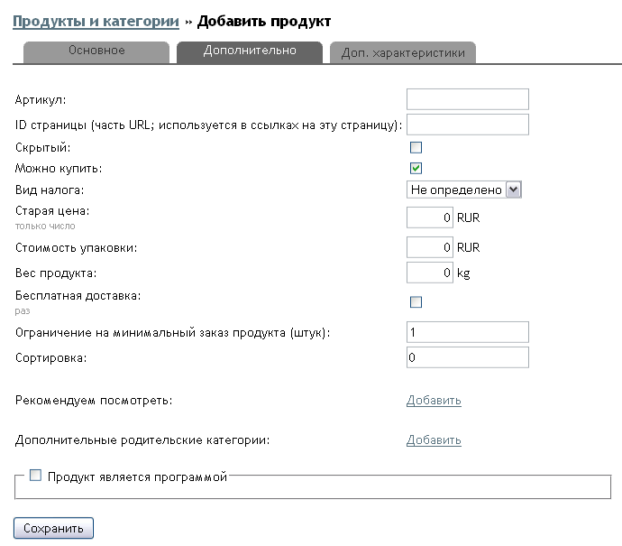
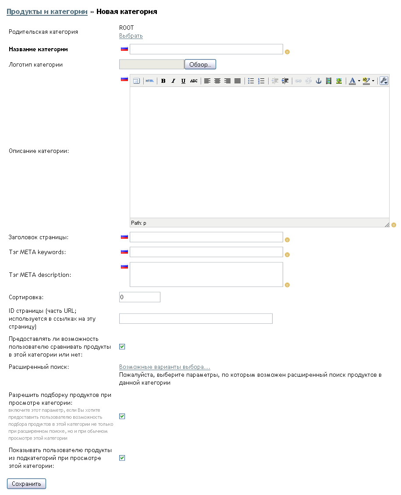

Общие настройки и установки магазина.Основные установки, обязательные для нормальной работы вашего магазина, доступны в администрировании, в разделе «Настройки –> Настройки». На вкладках этой страницы имеется четыре подраздела:
|
Настройки магазинаМаксимальный размер всех текстовых полей настроек – 255 символов. Общая информация о назначении каждого поля расположена на странице. Ниже даны некоторые дополнительные рекомендации.
Название магазина — вставляется в письма, рассылаемые магазином во фразе «Спасибо за выбор». Адрес вашего интернет-магазина — URL главной страницы интернет-магазина. Содержимое этой строки вставляется в качестве адреса ссылки в письма, отправляемые посетителям магазина. Основной email-адрес магазина — желательно указывать адрес электронной почты, расположенный на том же домене, что и интернет-магазин. Это вызывает больше доверия у покупателей и почтовых спам-фильтров. Email для отправки уведомлений о заказах — для этого адреса используйте самый надежный почтовый ящик, который у вас есть. Это основной канал связи с покупателями. Защита от отправки данных в магазин через сторонние скрипты (captcha) — обезопасит ваш магазин от нападений так называемых «ботов» — программ, размещающих спам на сайтах и форумах через формы обсуждений. Формат даты — выберите один из двух вариантов. Первый применяется в США, второй в большинстве других стран. Влияет на отображение даты в новостях, электронных письмах и истории заказов. Первый день недели — влияет на подготовку сравнительного отчета по продажам за текущую и предыдущую недели. Заголовок главной страницы магазина — введенный здесь текст влияет на индексацию магазина поисковиками. Он используется в заголовках всех страниц витрины. Кроме названия, в это поле можно добавить короткую фразу, содержащую основные ключевые слова. META Keywords главной страницы — перечисленные через пробел или запятую, ключевые слова будут подставляться в значение META-тега keywords. META Description главной страницы — краткий текст, описывающий ваш магазин. Подставляется в содержимое META-тега description. Часто используется поисковыми машинами в качестве краткого реферата страницы, отображаемой в результатах поиска под ссылкой на страницу. Рекомендуется делать этот текст емким, привлекательным и включать в него основные ключевые слова. Ключ Google Maps API — предоставляется после бесплатной регистрации на сайте http://code.google.com/intl/ru/apis/maps/signup.html. Этот ключ необходим для просмотра местонахождения клиента на карте по введенному им адресу и прокладки маршрутов от магазина/склада. Адрес вашего офиса или склада — адрес, с которого необходимо рассчитывать стоимость доставки товаров покупателю. Логотип для печатных форм — загрузите файл с изображением вашего логотипа. Этот логотип будет отображаться на печатных формах документов, формируемых интернет-магазином, например, счета (инвойса) и листа доставки. |

Каталог Класс налогов по умолчанию — значение по умолчанию: «Не определено». В этом случае подразумевается, что сумма налога уже входит в цену товара и добавлять ее не нужно. Если вы вносите цены товаров без налогов (например, НДС), а размер налога определяется по ставке, определенной в разделе «Налоги», здесь можно указать один из налогов, который будет применяться по умолчанию для всех товаров, добавляемых в каталог магазина. Для товаров, добавленных в каталог ранее, этот параметр применяться не будет. При необходимости следует изменить класс налога в свойствах всех таких товаров. Покупатели могут оценивать продукты — разрешает выставление оценок товаров покупателями по пятибалльной шкале и отображение оценок в виде символов звезды. Повторное голосование в течение одного посещения магазина клиентом невозможно. Результаты рейтинга могут быть использованы для сортировки товаров на витрине при просмотре категории. По умолчанию параметр включен. Единица измерения веса — доступные значения: граммы, килограммы, фунты. От выбранного значения зависят алгоритмы расчета суммы доставки заказа, учитывающие вес заказанных товаров. Значение по умолчанию — «Граммы». Количество продуктов на одной странице — количество товаров, отображаемое на витрине при просмотре категории. Если в категории больше продуктов, чем указано здесь, то список будет разбит на несколько страниц. Значение по умолчанию — 10. Количество столбцов при показе товаров на странице — результат изменения этого параметра (вид списка товаров внутри категории) зависит от размера уменьшенного изображения товара и выбранного шаблона дизайна. После увеличения этого значения желательно проверить результат в разных браузерах. Значение по умолчанию — 1. Вести учет товаров на складе — включает режим учета движения товара. Если параметр включен, для заказа покупателями доступны только те товары, количество которых на складе больше 0. После оформления каждого заказа количество товара на складе уменьшается. По умолчанию параметр включен. Если параметр выключен, графа «На складе» в свойствах товара не отображается, а количество на складе (даже если оно было введено) не изменяется и не влияет на возможность заказа продукта. Следующий параметр («Показывать пользователю точный остаток товаров на складе») в таком случае ни на что не влияет. Показывать артикул продукта в пользовательской части — если этотпараметр включен, артикул товара будет отображаться на витрине. Показывать пользователю точный остаток товаров на складе — при включенном параметре на витрине отображается количество единиц товара, оставшихся на складе, отсутствующие в наличии товары подписываются фразой «Нет на складе». Параметр работает только при включенном учете товаров на складе (см. предыдущий пункт настроек). Сортировка товаров — дает возможность покупателям просматривать товары внутри категории в порядке уменьшения/увеличения их цены, наименования или рейтинга. По умолчанию параметр включен. Разрешить сравнение продуктов в результатах простого поиска — дает покупателям возможность отметить и отобразить товары в таблице для сравнения не только при просмотре категории, но и на странице просмотра результатов поиска товаров. Размер уменьшенного изображения продукта (preview) — размер в пикселях по большей стороне с сохранением пропорций. Изображение, загруженное через карточку редактирования товара, автоматически уменьшается до этого размера. Данный вариант изображения отображается при просмотре списка товаров внутри категории и в результатах поиска. Значение по умолчанию — 150. Размер стандартного изображения продукта — размер в пикселях по большей стороне с сохранением пропорций. Основное изображение автоматически уменьшается до этого размера. Этот вариант отображается при просмотре страницы с подробной информацией о товаре. При нажатии на него отображается оригинальное изображение большого размера. Значение по умолчанию — 300.
Уменьшать оригинальное (самое большое) загружаемое изображение продукта — если введено значение больше нуля, то оригинальное иизображение товара будет уменьшено до указанного размера в пикселях. В противном случае изображение будет загружено с исходными размерами. Размер изображения (логотипа) категории — размер в пикселях. Все загруженные логотипы категорий приводятся к этому размеру, если их исходный размер больше указанного здесь. Значение по умолчанию — 100. Качество изображений продуктов после уменьшения размера (0 — хуже, 100 — лучше) — укажите уровень сохранения качества уменьшенных изображений товаров и логотипов категорий в процентах. Для сохранения максимального уровня качества изображений введите значение 100. |

Покупатели Страна по умолчанию — автоматически устанавливается в форме адреса покупателя при регистрации и оформлении заказа. Варианты выбора зависят от списка стран, настроенных в разделе «Настройки -> Страны». Группа по умолчанию — группа, в которую автоматически добавляется каждый вновь зарегистрированный покупатель. Позднее любого покупателя можно перенести в другую группу в разделе «Покупатели –> Группы покупателей». Требовать активацию аккаунта покупателем после регистрации — включение этого параметра добавляет дополнительный шаг к процессу регистрации клиента в магазине: для завершения регистрации покупателю необходимо перейти по специальной ссылке. По умолчанию параметр выключен. |

Корзина и заказы
Возможность добавления товаров в корзину и оформления заказов — отключив этот параметр, вы можете превратить магазин в интернет-каталог. Рекомендуется отключать этот параметр при продолжительной работе над обновлением каталога во избежание заказа неактуальных товаров. Как показывать корзину покупок — способ отображения покупательской корзины: всплывающее окно с затемнением либо обычное окно витрины магазина. Минимальная сумма заказа (в текущей валюте) — если стоимость товаров в корзине покупателя будет меньше указанного значения, покупатель получит соответствующее предупреждение и сможет оформить заказ, только увеличив стоимость покупки. Префикс номеров заказа — число или текст, автоматически добавляемое к номеру каждого заказа. Это удобно использовать для продолжения старой системы нумерации (при переходе с другого скрипта на Shop-Script) или для повышения доверия клиентов к магазину. Запрашивать у покупателя адрес выставления счета (адрес плательщика) — этот параметр может быть необходим в случае работы с покупателями, являющимися юридическими лицами, или для торговли товарами, которые доставляются не по фактическому адресу покупателя (например, доставка цветов или подарков). Оформление заказа производится в защищенном режиме (SSL) — страницы, открывающиеся на витрине во время оформления заказа, передают данные на сервер и с сервера в защищенном режиме. Полезно в случае приема оплаты заказов банковскими картами. По умолчанию параметр выключен.
Доставка облагается налогом — позволяет указать ставку налога, применяемую к стоимости доставки. Страна и Область — регион, в котором фактически расположен магазин (или склад) и из которого осуществляется доставка товара покупателям. Выберите нужные значения из списков для правильной работы работы модулей автоматического расчета суммы доставки. |

ВалютыВ этом разделе можно изменять, добавлять и удалять валюты, доступные покупателям на витрине магазина. Одна из валют должна быть выбрана в качестве основной. При добавлении товаров, установке сумм скидок и купонов, настройке алгоритма расчета стоимости доставки, начислении и выплате комиссионных все указанные суммы будут считаться в основной валюте. Посетитель, впервые попавший в ваш магазин, также увидит цены именно в этой валюте. Курсы всех других валют указываются по отношению к основной.
Кроме курса, для каждой валюты необходимо указать следующие параметры: Название валюты — введите название на всех языках, используемых в магазине. Код валюты ISO 3 — трехбуквенный код в соответствии с международными стандартами; код российского рубля — RUB. Шаблон — вид отображения суммы в этой валюте; укажите символ валюты, если таковой имеется (например, $, €, ¥, £), и его положение относительно суммы. Разделитель целой и дробной части — используется при отображении денежных сумм на витрине, обычно запятая или точка. Количество дробных знаков — задает точность отображения сумм в этой валюте, обычно 2; если копейки или центы не нужны, выберите 0. Разделитель групп разрядов — указанный символ используется для разделения групп разрядов (миллионов, тысяч и единиц); обычно пробел, точка или запятая. |
Страны и областиВ этих разделах редактируются списки государств и их регионов (например, областей или штатов). Эти списки используются при вводе адреса покупателями, для настройки налогов, при расчете суммы доставки. В разделе «Настройки –> Страны» находится список стран. У каждой страны есть название и два ISO-кода (двух- и трехбуквенный). Названия каждой из стран можно перевести на все языки интернет-магазина. В форме регистрации покупателей в поле «Страна» отображается список всех этих стран.
В разделе «Настройки –> Области» добавляются регионы в составе страны. Чтобы увидеть список имеющихся областей, надо выбрать соответствующую страну в верхней части страницы. В базе данных уже присутствуют регионы некоторых стран. Список регионов в форме регистрации покупателей отображается в алфавитном порядке. |
Форма регистрации и оформления заказовВ этом разделе администратор магазина может изменить форму ввода информации о покупателе при оформлении заказа. В первой части страницы перечислены произвольные поля. Их можно изменять, удалять и добавлять новые. Для каждого поля можно задать название (например, «Желательное время доставки», «Номер ICQ» и т.д.) на всех языках, имеющихся в магазине. Можно указать обязательность заполнения и порядок сортировки (каким по счету оно должно отображаться на странице регистрации покупателя). Нижняя часть страницы содержит список стандартных полей адреса покупателя. Их можно отключить или сделать необязательными для заполнения. Удалит ьэти поля нельзя. Поля имя, фамилия и адрес электронной почты всегда обязательны для заполнения. |
Альтернативы оформлению заказаКроме стандартной процедуры оформления заказа можно разрешить покупателям воспользоваться аналогичными услугами платежных систем Google Checkout или PayPal Express Checkout. Обязательным требованием является наличие индивидуального SSL-сертификата для доменного имени магазина и выделенного IP-адреса. Для включения этих режимов необходимо зарегистрироваться в соответствующих платежных системах, получить реквизиты и указать их в форме настройки. |
НалогиНалоги рассчитываются только сверх уже введенной в каталог цены товара. Налоговая ставка выражается в процентах. Можно определить несколько налоговых ставок в магазине, которые будут применяться в зависимости от настроек, установленных администратором, и адреса покупателя. Каждому товару может быть присвоена собственная налоговая ставка. В разделе «Настройки –> Налоги» введите название первого налога, например, «НДС 10%» Оставьте выбранным параметр «Адрес доставки» и нажмите «Добавить». Добавленная ставка появится в списке, а справа от нее появится ссылка «Определить ставки для класса налогов». Нажав на нее, укажите процент налога, а также страну и регион, для которых он должен применяться. Если адрес, указанный покупателем в качестве адреса доставки, соответствует выбранным названиям страны и региона, то к заказанному товару будет применен данный налог. После создания налогов, их следует присвоить товарам. Если товары уже внесены в каталог, на второй закладке карточки редактирования товара выберите нужный налог. При добавлении новых товаров им по умолчанию присваивается налоговая ставка, выбранная в разделе «Настройки –> Настройки –> Каталог –> Класс налогов по умолчанию». |
СкидкиСкидки могут предоставляться несколькими способами: для групп зарегистрированных покупателей, путем создания купонов, в зависимости от суммы заказанных товаров, по накопительной сумме всех заказов зарегистрированного покупателя. При использовании нескольких способов можно выбрать порядок сложения скидок. В зависимости от настроек будут применяться все доступные скидки в сумме или наибольшая из имеющихся. Управление скидками осуществляется в разделе администрирования «Заказы –> Скидки». Чтобы разрешить какой-либо вид скидок, нажмите на кнопку «Включить» напротив соответствующего описания. Купоны на скидку могут создаваться для одноразового или многоразового использования. С их помощью можно предоставлять скидку в виде процента от суммы заказа или в размере фиксированной суммы.
Одноразовый купон может создаваться для случаев скидок, не предусмотренных другими способами и оговоренных с покупателем индивидуально. Ими можно также пользоваться для расчета с партнерами путем предоставления им купонов на сумму комиссионных. Многоразовые купоны удобны для проведения рекламных акций и распространения их кодов в письмах, в рекламных объявлениях. Многоразовые купоны могут иметь срок действия и отключаться автоматически. Многоразовые купоны без срока действия могут быть отключены или удалены администратором магазина. Скидки по сумме текущего заказа задаются в виде шкалы сумм и соответствующим им процентов. При превышении указанного порога покупателю предоставляется указанный процент скидки. Вы можете указать неограниченное количество пороговых значений. Скидка по общей сумме заказов применяется только к зарегистрированным покупателям. При ее расчете учитываются только заказы со статусом «Доставлен и оплачен». Принцип работы этого вида скидок аналогичен предыдущему. В конце формы настроек находится переключатель, позволяющий изменить режим работы при наличии нескольких видов скидок. Его состояние влияет на покупки всех покупателей магазина. Вы можете либо разрешать комбинирование нескольких скидок, либо использовать максимальную из них. |
Товары и категории |
ТоварыВ разделе «Продукты –> Продукты и категории» в левой части страницы находится список категорий продуктов, а в правой — список продуктов, содержащихся в выбранной категории. Вверху правой части имеется кнопка «Добавить продукт», при нажатии на которую открывается страница добавления нового товара. Все параметры товара разделены на три группы, доступные на соответствующих вкладках: Основное, Дополнительно и Доп. характеристики. Вкладка ОсновноеНаименование — название товара. Оно автоматически добавляется в заголовок окна браузера на витрине магазина. При импорте/экспорте каталога товаров это поле может быть использовано в качестве уникального идентификатора. Цена — задается в валюте по умолчанию. Цены для других валют будут автоматически рассчитаны в соответствии с установленным курсом. Разделителем дробной части является точка. На складе — указывает количество единиц товара, доступных для заказа. Данное поле отображается только при включенном параметре настроек магазина «Вести учет товаров на складе». Категория — название категории, в которой находится продукт. По умолчанию в этом поле отображается название категории, выбранной перед нажатием кнопки «Добавить продукт». Если товар сохраняется в корневой категории (ROOT), он не будет виден на витрине магазина. Позднее такие товары можно переместить в нужную категорию. Чтобы изменить основную категорию товара, нажмите на ссылку «Выбрать» и во всплывающем окне выберите необходимую категорию. Описание — текст,
отображающийся на странице с подробной информацией о товаре. Для ввода описания используется визуальный текстовый редактор. С его помощью можно
выделить часть текста полужирным, наклонным или подчеркнутым шрифтом и т.д. Вы можете также переключить редактор в режим правки HTML-кода и использовать HTML-разметку для создания нужного форматирования. Максимальная длина текста — 64 000 символов, включая HTML-теги. Краткое описание — сокращенная версия описания товара. Она отображается при просмотре списка товаров внутри категории на витрине.
Теги — (не следует путать с META-тегами HTML, описанными ниже) являются словами-«ярлыками», используемыми при создании облака тегов на витрине. Каждому товару можно присвоить несколько тегов, перечисленных через запятую. С их помощью можно создать дополнительный способ навигации среди товаров. Например, автозапчасти могут быть сгруппированы по категориям, соответствующим названиям марок автомобилей, и отмечены тегами, соответствующими основным узлам и системам автомобилей. Одежда может быть сгруппирована по полу и возрасту, а в тегах могут быть перечислены наименования производителей и типы материалов. Мета: Заголовок страницы текст, который отображается в заголовке окна браузера и подставляется в значение HTML-тега TITLE страницы данного товара. Значение этого поля влияет на индексацию и рейтинг внутренних страниц магазина в поисковых системах. По умолчанию используется название категории. Максимальная длина — 255 символов. Ключевые слова — перечисленные через пробел или запятую, ключевые слова подставляются в значение META-тега keywords на странице с подробной информацией о товаре. Описание — краткий текст, обобщающий содержимое страницы. Подставляется в код META-тега description. Часто используется поисковыми машинами в качестве краткого реферата страницы, отображаемого в результатах поиска под ссылкой на страницу. Фотографии продуктов — изображения товаров, отображаемые в различных разделах магазина. При добавлении товаров через данный раздел администрирования достаточно загрузить только изображение максимального размера — остальные (уменьшенные) варианты будут созданы автоматически. Изображение в начале списка является основным. Маленькая версия отображается в списке товаров при просмотре категории. Средняя — на странице с подробной информацией о товаре. Большая — после щелчка по на среднему варианту изображения. Все остальные изображения в списке отображаются только на странице детального описания продукта и увеличиваются после щелчка по ним или при использовании стрелок навигации рядом с первым открытым увеличенным изображением товара. Загрузка изображений товара в каталог магазина осуществляется нажатием кнопки «Загрузить» на странице добавления товара. Наряду с загрузкой изображений с вашего компьютера можно использовать изображения из внешних источников (с других интернет-сайтов или серверов). Для этого на странице добавления/редактирования товара в области «Загрузить по одному» вставьте ссылку на файл изображения в поле «URL» и нажмите «Загрузить».
Вкладка Дополнительно Артикул — внутренний код или артикул товара. Может использоваться в качестве уникального идентификатора товара при импорте/экспорте каталога или для учета. Максимальная длина — 25 символов. Может содержать цифры, буквы, а также тире, символ подчеркивания, косую черту. ID страницы (часть URL; используется в ссылках на эту страницу) — при формировании адреса (URL) страницы продукта по умолчанию используется его название. Если наименование записано не латиницей, то оно транслитерируется (например из названия «Видеомагнитофон JVC» формируется фрагмент адреса «videomagnitofon-jvc»). Если вас не устраивает результат работы автоматической транслитерации, вставьте в данное поле свое написание адреса. Допускается использование латиницы, цифр, дефиса и символа подчеркивания. Максимальная длина — 255 символов.
Скрытый — этот переключатель позволяет скрыть товар с витрины, не удаляя его из каталога магазина. Можно купить — этот переключатель разрешает/запрещает заказ данного товара клиентами. Если параметр отключен, товар виден на витрине со всей имеющейся о нем информацией (цена, описание, изображения отзывы и т.д.), однако кнопка «Добавить в корзину» отсутствует. Это может быть удобно в магазине с отключенным учетом по складу в случае отсутствия товара. Также при использовании этой кнопки товар нормально индексируется поисковыми машинами в отличие от скрытия или удаления товара. Вид налога — ставка налога, заданная в разделе «Налоги» и применимая к данному товару. Из выпадающего списка можно выбрать один из заранее настроенных налогов. Если один из налогов выбран в качестве налога по умолчанию, то он автоматически будет присваиваться всем вновь создаваемым товарам. Старая цена — используется в маркетинговых целях при снижении цены или для стимуляции покупателей. Если значение параметр не равно 0, то оно видно на странице с информацией о товаре вместе с расчетом процентного изменения по отношению к текущей цене. Разделителем дробной части является точка. Стоимость упаковки — дополнительная сумма, которая автоматически добавляется к стоимости доставки, рассчитываемой другими способами. Полезно при наличии крупногабаритных или хрупких товаров, доставка которых стоит больше доставки других товаров. Стоимость указывается в основной валюте магазина. Разделителем дробной части является точка. В случае заказа нескольких единиц одного товара в одном заказе это значение будет умножено на количество заказанных единиц. Вес продукта — в единицах измерения, выбранных по умолчанию в настройках магазина (килограммы, граммы или фунты). Это значение используется модулями автоматического расчета стоимости доставки по весу для вычисления общего веса заказа. Может иметь дробную часть, отделенную точкой. Бесплатная доставка — позволяет не учитывать вес товара или стоимость при расчете суммы доставки автоматическими модулями. Включение этого параметра не влияет на «Стоимость упаковки», которая всегда добавляется к стоимости доставки. По умолчанию параметр выключен. Ограничение на минимальный заказ продукта (штук) — определяет минимальное количество единиц данного товара, которое можно добавить в корзину. Если покупатель добавит меньшее количество, ему будет показано соответствующее сообщение, и возможность продолжить оформление заказа будет отключена. Такой заказ нельзя будет оформить, пока количество товаров не будет увеличено до минимального допустимого. Сортировка — место данного товара в списке товаров в пределах категории. Это значение имеет преимущество перед алфавитной сортировкой, используемой по умолчанию. Наименования нескольких товаров с одинаковыми значениями сортировки будут отсортированы по алфавиту. Допускается использовать отрицательные и положительные целые значения. Чем меньше значение, тем выше наименование товара в списке. Рекомендуем посмотреть — позволяет создать список товаров, сопутствующих данному. Их выбор производится из уже имеющихся в каталоге товаров. В этот список допускается добавление неограниченного количества товаров. Наименования и изображения товаров, добавленных в список «Рекомендуем посмотреть» , отображаются на странице с подробной информацией о данном товаре. Это позволяет увеличить продажи и улучшить навигацию в каталоге для покупателей. Например, таким образом покупатель может сэкономить время поиска аксессуаров для уже выбранного мобильного телефона. Окно выбора товаров появляется при нажатии на ссылку «Добавить». Дополнительные родительские категории — позволяет поместить товар сразу в несколько категорий. Изначально каждый товар находится только в одной категории. В некоторых случаях может быть полезным упоминание имени товара в нескольких категориях. Например, можно создать категории «Новинки» или «Горячие предложения» и добавлять их в качестве дополнительных родительских для соответствующих товаров. Выбор дополнительных родительских категорий появляется при нажатии на ссылку «Добавить». Продукт является программой — этот переключатель позволяет пометить товар, представляющий собой файл (аудио-/видеофайл, программу и т.п.). При включении переключателя появляется поле загрузки файла. Вы можете указать, сколько дней с момента покупки файл будет доступен для скачивания покупателю, и сколько попыток скачивания разрешается. Перед загрузкой файлов большого размера уточните у администрации хостинга максимально допустимый объем закачиваемых файлов. Максимально допустимая длина имени файла, включая расширение — 255 символов. Внимание: не используйте файлы, содержащие в имени пробелы, кириллицу (или символы других национальных алфавитов) и знак процента, так как некоторые браузеры и веб-серверы/сервисы неправильно обрабатывают такие символы в именах файлов. Вкладка Доп. характеристикиВ дополнение к уже имеющимся характеристикам можно добавить дополнительные, например, «Цвет», «Модель» или «Производитель». Чтобы внести значения доп. характеристик, необходимо создать нужные характеристики в разделе «Продукты –> Доп. характеристики».
На вкладке «Доп. характеристики» отображается список имеющихся дополнительных характеристик товаров. Если для дополнительной характеристики не указаны значения, напротив ее наименования указано «Не определено». В этом случае характеристика не отображается на странице товара. Вариант «Произвольное значение» позволяет задать индивидуальное текстовое значение для свойства. Вариант «Выбор из предустановленных значений» позволяет выбрать одно из значений характеристики, внесенное в разделе «Продукты –> Доп. характеристики». |
КатегорииЧтобы добавить категорию товаров, нажмите на кнопку «Добавить категорию» под списком категорий. Страница создания категории содержит следующие поля:  Родительская категория — существующая категория каталога, в которую будет помещена вновь создаваемая категория. В качестве родительской можно выбрать любую категорию или корень каталога (ROOT), нажав на ссылку «Выбрать». Название категории — наименование, отображаемое на витрине. Максимальная длина — 255 символов. Чтобы ввести наименования категории на всех языках магазина, нажмите на круглую желтую кнопку справа от поля ввода. Логотип категории — изображение, отображаемое на витрине рядом с названием категории. Выбранный файл сохраняется в свойствах категории после нажатия на кнопку «Сохранить». Максимальная длина имени файла — 30 символов.
Описание категории — текст, отображаемый на витрине при просмотре содержимого категории. При вводе этого текста можно использовать встроенный редактор форматирования. С его помощью можно выделить часть текста жирным, наклонным или подчеркнутым шрифтом, изменить отступы абзацев и другие свойства текста. Есть возможность переключения в режим редактирования HTML-кода и использовать любые допустимые HTML-теги. Максимальная длина текста — 64 000 символов, включая HTML-теги. Заголовок страницы — текст, отображаемый в заголовке окна браузера и использующийся в содержимом HTML-тега TITLE страницы данной категории. Значение этого поля влияет на индексацию и рейтинг страниц в поисковых системах. По умолчанию поле содержит название категории. Максимальная длина — 255 символов. Сортировка — порядок сортировки категории по отношению к другим категориям этого же уровня, учитываемый при отображении списка категорий на витрине. Допускается указание положительных и отрицательных целых чисел. В начале списка отображаются категории с наименьшими значениями. Значение по умолчанию — 0. ID страницы (часть URL; используется в ссылках на эту страницу) — при создании адреса страницы категории по умолчанию используется название категории. Нелатинские символы автоматически транслитерируются. Если вас не устраивает результат автоматической транслитерации, введите в это поле свое написание адреса категории с использованием символов латиницы, цифр, дефисов и символов подчеркивания. Не используйте значения, указанные для других категорий, иначе страница с данной категорией будет недоступна на витрине! Максимальная длина — 255 символов. Предоставлять возможность пользователю сравнивать продукты в этой категории или нет — параметр предоставляет покупателю возможность сравнивать товары в данной категории на витрине. Если параметр включен, на витрине в данной категории отображается кнопка «Сравнить выбранные продукты». По умолчанию параметр включен. Расширенный поиск — позволяет настроить поля формы поиска в пределах категории. Использование такого поиска удобно для просмотра содержимого категорий с большим количеством товаров. При нажатии на ссылку «Возможные варианты выбора» появляется окно для выбора параметров, поиск по которым возможен в пределах данной категории. Если какая-либо характеристика товара имеет фиксированный набор значений, покупатель сможет выбрать в форме поиска только эти значения. В противном случае во время поиска допускается указывать произвольное значение в текстовое поле. По умолчанию параметр выключен. Разрешить подборку продуктов при просмотре категории — отображает форму поиска товаров в пределах категории. По умолчанию параметр включен. Показывать пользователю продукты из подкатегорий при просмотре этой категории — включает отображение товаров, содержащихся в подкатегориях, являющихся дочерними по отношению к данной категории. По умолчанию параметр включен. Редактирование категорииЧтобы изменить параметры существующей категории, щелкните по ее названию в разделе «Продукты -> Продукты и категории». Рядом с названием категории перейдите по ссылке «Редактировать категорию». Чтобы удалить категорию, перейдите по ссылке «Удалить категорию». Все товары, находившиеся в категории во время ее удаления, автоматически переносятся в корень (ROOT) каталога. |
Массовое редактирование товаровВ разделе «Продукты –> Продукты и категории» есть возможность редактировать некоторые свойства сразу нескольких товаров без необходимости изменения свойств каждого товара по отдельности. В области просмотра содержимого категории отображается таблица со списком товаров. Вы можете отметить один или несколько товаров для выполнения таких операций, как удаление, перемещение в другую категорию, создание дубликатов товаров. Отметив нужны товары, нажмите соответствующую кнопку под списком товаров. Чтобы умножить цены всех товаров в списке на определенный коэффициент (удобно для массового поднятия или снижения цен в магазине), введите нужное число в поле «Умножить все цены на» и перейдите по ссылке «Умножить». В результате значения в столбце «Цена» будут умножены на указанное значение. Чтобы сохранить изменения, нажмите на кнопку «Сохранить цены и сортировку». Чтобы изменить цены, количество на складе и значение сортировки нескольких товаров, введите нужные значения в текстовые поля списка товаров и также нажмите на кнопку «Сохранить цены и сортировку». |
Импорт товаров из CSV-файлаКроме внесения каждой товарной позиции и категорий вручную, есть возможность подготовить эту информацию в таблице и импортировать ее в каталог магазина. Для этого необходимо создать файл в формате CSV с помощью OpenOffice Calc, Microsoft Excel или другой аналогичной программы. CSV-файл должен иметь описанную ниже структуру, порядок столбцов значения не имеет. В первой строке таблицы должны содержаться заголовки столбцов, по одному в каждой ячейке первой строки. Столбцы CSV-файла
Структура каталога Все товары, перечисленные в строках файла, должны быть сгруппированы по категориям каталога. В начале каждой группы товаров должно быть указано название категории. Если категория находится на самом верхнем уровне, то ее наименование указывается как есть. Если для категории родительской является другая категория, то перед названием вложенной категории в поле Наименование следует добавить восклицательный знак (!). Уровень вложенности категорий друг в друга неограничен. Пример: содержимое колонок Наименование и Цена в CSV-файле может выглядеть следующим образом:
В результате будет получен каталог следующего вида.
Пример CSV-файла Пример содержит простейшую иерархию из одной категории «Сотовые телефоны» с единственным товаром «Телефон Samsung SGH-L350»:
После создания CSV-файла перейдите в раздел «Продукты -> Импорт». Выберите файл на своем компьютере, символ, используемый в CSV-файле для разделения данных (обычно точка с запятой), и кодировку файла (обычно cp1251 или utf-8) и нажмите «ОК». На следующей странице отобразится информация о числе столбцов, обнаруженных в загруженном CSV-файле. В таблице в нижней части страницы выберите напротив названий свойств товаров («Поля в базе данных») названия столбцов в CSV-файле («Колонки в CSV-файле»). Если какое-либо свойство товара (например, «Фотографии») импортировать не нужно, выберите напротив этого названия вариант «пропустить этот столбец». В столбце «Колонка идентификации» отметьте свойство товаров, уникально отличающее один от другого. Этот выбор зависит от того, каким образом именно в вашем магазине различаются товары: по артикулу, наименованию или ID страницы. Если в ходе импорта в каталоге магазина будет обнаружен товар со значением поля идентификации, совпадающим с таким же значением товара в CSV-файле, то все свойства товара из CSV-файла (для которых не выбран вариант «пропустить этот столбец») будут внесены в существующий товар. Например, если на данном шаге выбрана колонка идентификации «Артикул» и в магазине уже есть товар с артикулом dr156, а в импортируемом CSV-файле также имеется товар с артикулом dr156, то информация из CSV-файла для этого товара будет внесена в существующий товар.
|
Списки товаровЧтобы выделить группу товаров из общего каталога и выгодно представить ее на витрине магазина, объедините такие товары в особый список и поместите в отдельную область. Для этого в разделе администрирования «Продукты -> Списки» создайте новый список, как описано ниже. Создание списка товаров
Добавление товаров в списокПосле создания списка добавьте в него товары:
Размещение списка товаров на витрине магазинаЧтобы список товаров появился на витрине, его нужно добавить в структуру интернет-магазина с помощью редактора дизайна:
|
Способы приема платежейЧтобы добавить новый способ оплаты заказов, перейдите в раздел Настройки -> Оплата, нажмите Добавить способ оплаты, выберите тип модуля («По кредитным картам», «Через платежную онлайн-систему» или «Ручная обработка платежей») и нажмите Дальше >>. На следующей странице выберите требуемый модуль оплаты и нажмите Дальше >>. Введите требуемые значения на странице настройки платежного модуля и нажмите Сохранить. Для приема оплаты в магазине можно использовать указанные ниже платежные модули. Банковскими картами
Кроме перечисленных выше модулей для приема платежей банковскими картами для отдельной загрузки и установки на сайте Shop-Script доступны модули, перечисленные ниже. Эти модули не включены в основной дистрибутив для обеспечения однозначного соответствия Shop-Script требованиям стандарта PCI DSS. Более подробно о требованиях стандарта и об использовании дополнительных модулей вы можете прочитать по адресу http://www.webasyst.ru/support/help/shop-script-pci-dss-compliance.html. Дополнительные модули, использование которых может потребовать сертификацию вашего интернет-магазина в соответствии со стандартом PCI DSS:
Ручная обработка кредитных карт возможна, если у вас есть аккаунт продавца (merchant account) в одной из платежных систем и договоренность о приеме информации о картах покупателей вашего магазина с вашим банком. В этом случае покупатели сообщают вам номер своей карты при оформлении заказа. Эти данные хранятся в базе данных магазина в зашифрованном виде и доступны администратору для последующей обработки. Чтобы получить средства с карты покупателя вручную, войдите в аккаунт платежной системы, используя данные (например, номер продавца и пароль), предоставленные вам при регистрации в системе, и укажите данные карты покупателя в соответствующих полях. За подробной информацией о работе с интерфейсом платежной системы для приема платежей с банковских карт вручную обратитесь к справочному разделу платежной системы.
Остальные способы позволяют выполнять автоматическую обработку платежей и подразумевают регистрацию владельца магазина в платежной системе. После регистрации в платежной системе владелец магазина получает идентификационные данные (ID продавца, пароль и иные параметры), которые необходимо указать в настройках модуля обработки платежей с банковских карт. Через платежную онлайн-систему
Для оплаты товаров через системы онлайн-платежей и покупатель, и продавец должны быть зарегистрированы в этих системах. Ручная обработка платежей
При использовании этих способов оплаты перевод средств по оплате заказа выполняется не через интернет. Для правильной модулей оплаты по квитанциям (для физических лиц) и счетам (для юридических лиц) предполагается автоматическое формирование платежных документов. Печатные формы таких документов необходимо предварительно настроить в разделе Инструменты -> Печатные формы, как описано в разделе руководства «Печатные формы». |
Расчет стоимости доставкиНастройка расчета стоимости доставки выполняется в разделе «Настройки –> Доставка». Перетаскивая курсором мыши имеющиеся способы доставки, вы можете изменить порядок, в котором способы доставки будут отображаться на витрине магазина. Чтобы добавить новый способ доставки, нажмите на кнопку «Добавить способ доставки». На следующей странице выберите, по какому алгоритму должна рассчитываться стоимость доставки: Без расчета стоимости доставки — при выборе этого варианта дополнительная стоимость доставки к общей стоимости заказа не добавляется. DHL, FedEx, InterShipper, UPS, USPS — позволяют получать реальную стоимость доставки этими службами. Для работы этих способов расчета необходимо зарегистрироваться на сайте соответствующей службы и получить параметры доступа.
В процессе работы этих способов магазин отправляет на сервер перевозчика информацию о весе заказа, адрес получателя и другие параметры. Стоимость доставки, рассчитанная службой доставки, будет добавлена к стоимости заказа. Доставка по странам и областям (% от стоимости заказа) и Доставка по странам и областям (фиксированная стоимость) позволяют для существующего списка стран и областей задать стоимость доставки виде фиксированной суммы или процента от общей стоимости заказа. Курьер и Курьер (расчет стоимости доставки по весу) позволяют задать стоимость доставки в зависимости от адреса покупателя — фиксированную либо в зависимости от веса заказа. Для каждой страны либо также региона можно задать собственную шкалу расчета стоимости. Настроенные с помощью упомянутых выше четырех модулей способы доступны только тем клиентам, для стран и регионов которых они настроены. Максимум между фиксированной стоимостью и процентом от суммы заказа является комбинацией двух вариантов с расчетом обеих сумм и добавлением большего значения к стоимости заказа. Почта России использует официально объявленный алгоритм почтовой службы. Для правильной работы модуля следует распределить по поясам все регионы Российской Федерации, куда планируется осуществлять доставку. Если вы не знаете, какому поясу соответствует как-либо регион, проконсультируйтесь в почтовом отделении, через которое будет осуществляться отправка заказов. Фиксированная стоимость доставки — одинаковая сумма для всех покупателей и заказов. Фиксированная стоимость доставки + процент позволяет использовать сумму обязательной фиксированной суммы и процента от стоимости заказа независимо от адреса покупателя. |
Обработка заказовУведомления о заказахПри появлении в магазине нового заказа администратору высылается автоматическое уведомление по электронной почте либо также SMS (если такая отправка настроена в разделе «Заказы -> SMS»). Уведомление содержит номер и сумму заказа и другую информацию. Для получения уведомлений по электронной почте необходимо указать действующий адрес электронной почты в разделе «Настройки –> Настройки –> Настройки магазина» в поле «Email для отправки уведомлений о заказах». Чтобы проверить работу уведомлений, разместите тестовый заказ и проверьте указанный почтовый ящик. Если уведомления не приходят, удостоверьтесь что настройки спам-фильтров указанного почтового ящика позволяют принимать почту с доменного имени интернет-магазина. Статусы заказовПо мере обработки покупка может быть заказана, оплачена, доставлена, отменена и т.д. и каждой стадии обработки соответствует свое состояние заказа. Изначально в магазине доступны следующие статусы: Новый, В обработке, Деньги списаны с карты клиента, Доставлен и оплачен, Деньги возвращены, Отправлен, Отложен, Отменен. Каждый новый заказ автоматически приобретает статус Новый. Факт получения заказа и его первичная обработка может быть отражена изменением его статуса на В обработке. При смене статуса заказа можно включить отправку покупателю уведомление об этом по электронной почте. Создание заказа администратором
Обработка полученных заказов и создание новых выполняется в разделе «Заказы –> Заказы». В верхней части страницы находится кнопка «Создать новый заказ» для создания заказа администратором магазина. Она может пригодится в случае приема заказ клиента по телефону или другими нестандартными способами. Нажав на нее, необходимо выбрать, для кого будет создан заказ — для нового или ранее зарегистрированного покупателя. Зарегистрированных покупателей можно искать по имени, фамилии, адресу электронной почты и логину. Для этого достаточно ввести любой из этих параметров (полностью или любую часть) в поле поиска. Найденные покупатели будут представлены в списке. Выбрав нужного, можно продолжить создание заказа. Если вы создаете нового покупателя, необходимо ввести его имя, фамилию и почтовый адрес. На следующем шаге создания заказа выберите товары (используя поиск товаров по наименованию), укажите их количество и используемые способы оплаты и доставки. На электронный адрес покупателя будет выслано соответствующее уведомление. Список заказовСписок заказов отображается в соответствии с настройками фильтра статусов. Все имеющиеся статусы отображены над списком заказов. Индивидуальный заказ можно найти по его номеру с помощью формы поиска справа. Для дополнительной обработки информации о заказах есть возможность их экспорта в текстовый файл формата CSV. Обработка заказаЧтобы открыть страницу с подробной информацией о заказе и изменить его свойства (статус, состав заказанных товаров) либо распечатать документы (квитанцию, счет-фактуру, лист доставки для курьера), перейдите по ссылке с номером заказа в общем списке. На открывшейся странице присутствует несколько кнопок для смены статуса заказа и печати информации о заказе. Для более подробной работы с заказами предлагается использовать собственные статусы. Дополнительные статусы создаются в разделе администрирования «Заказы –> Статусы заказов». В нем можно указать название статуса, цвет и начертание шрифта для отображения в списке заказов. |
SMS-уведомления о заказахЧтобы оперативно реагировать на каждый поступающий заказ в интернет-магазине, можно настроить отправку уведомлений о заказах по SMS. В этом случае SMS-сообщение отправляется на указанный вами номер мобильного телефона сразу после размещения заказа покупателем.
|
Управление покупателями |
Список покупателейДля просмотра списка покупателей, оформивших заказы, используется раздел «Покупатели -> Покупатели». Здесь содержится полный список всех покупателей и инструмент поиска покупателей по их реквизитам (имя, фамилия, логин, адрес электронной почты), по названию группы или статусу. Фильтрация списка покупателей имеет смысл при включенном параметре «Требовать активацию аккаунта покупателем после регистрации» в разделе «Настройки –> Настройки -> Покупатели». По умолчанию список сортируется по значению столбца «Логин», при этом первыми отображаются незарегистрированные покупатели, не имеющие логина. По некоторым полям возможна сортировка, для этого достаточно нажать на заголовок соответствующего столбца. Повторное нажатие изменяет порядок сортировки на обратный. В последнем столбце таблицы напротив каждой записи находится кнопка удаления записи покупателя из базы данных магазина. Нажатие на строку с реквизитами покупателя открывает страницу редактирование его реквизитов. Страница разделена на несколько частей: контактная информация, адресная книга, история заказов и партнерская программа. Контактная информация содержит имя, фамилию, логин, адрес электронной почты и дополнительные поля регистрации, добавленные администратором. Для их изменения следует перейти по ссылке «Редактировать». Здесь же можно активировать аккаунт, если покупателю удалось сделать это самостоятельно, поместить покупателя в одну из групп или включить в список рассылки новостей, публикуемых в магазине. Адресная книга позволяет управлять адресами, внесенными покупателем при регистрации. Адрес можно редактировать, удалять, искать на карте (при настроенной интеграции с Google Maps). Ссылка «Добавить адрес» в конце списка позволяет внести новую запись в адресную книгу клиента. История заказов отображает информацию обо всех заказах клиента. Список имеет средства сортировки по нескольким параметрам и позволяет просматривать подробную информацию о каждом заказе. Внизу списка отображаются итоговые суммы всех заказов покупателя с разбивкой по статусам. Сумма отображается в основной валюте магазина. Партнерская программа позволяет просматривать список сделанных ранее комиссионных выплат покупателю — участнику партнерской программы, а также добавлять новые начисления комиссионных и выплат. |
Группы покупателейРаздел «Покупатели -> Группы покупателей» позволяет создавать группы, в которые можно включать зарегистрированных покупателей. Каждой из групп можно предоставить скидку, в этом случае она выражается в процентах от основной цены и применяется ко всем товарам магазина. Расчет размера групповой скидки происходит на последнем шаге оформления заказа и может зависеть от наличия других скидок и настроек в разделе «Заказы –> Скидки». Название группы можно указать на всех языках, используемых в магазине. В разделе «Настройки –> Настройки магазина –> Покупатели» имеется параметр «Группа по умолчанию» — название группы, в которую автоматически добавляются все вновь зарегистрированные покупатели. Для повышения лояльности покупателей и поощрения регистрации можно назначить скидку всем регистрирующимся покупателям, присвоив ее группе, выбранной по умолчанию. Добавить клиента в одну из групп можно на странице редактирования его контактной информации. |
Партнерская программаРасширить клиентскую базу магазина можно за счет привлечения новых клиентов по рекомендации или путем размещения ссылок на магазин на сторонних сайтах. Для этого включите партнерскую программу в разделе «Покупатели –> Партнерская программа». Информация о правилах участия в программе описана для покупателей в разделе кабинета покупателя «Мой счет -> Партнерская программа -> Как заработать деньги на партнерской программе». Чтобы покупка, сделанная привлеченным покупателем, зачлась партнеру для начисления комиссионных, покупатель должен во время оформления заказа указать логин участника партнерской программы. Чтобы не указывать логин вручную, покупатель может также перейти в магазин по специальной ссылке. Адрес такой ссылки является уникальным для каждого участника партнерской программы, он доступен в личном кабинете в покупателя разделе «Мой счет -> Партнерская программа -> Как заработать деньги на партнерской программе». Если привлеченный клиент зарегистрируется в магазине, то все его последующие покупки (независимо от способа входа в магазин) также будут являться основанием для начисления комиссионных. В партнерской программе учитываются только отгруженные заказы. Начисление комиссионных и оповещение партнеров выполняется администратором магазина. В разделе «Покупатели –> Партнерская программа» в верхней части страницы задается процент комиссионных для текущего начисления, включается оповещение партнеров о проведенных им начислениях и выплатах. В нижней части страницы производятся начисления. Чтобы рассчитать комиссионные, необходимо указать период времени, за который производится начисление. После проверки отгруженных заказов появляется список партнеров и начисленные им в этот период комиссионные. Администратор магазина может изменить сумму и валюту либо удалить начисление по своему усмотрению. При необходимости начисление можно добавить вручную, заполнив поля в левой нижней части страницы. Для расчетов с партнерами используется механизм выплат. Выплаты добавляются в правой нижней части страницы. Перечень начислений и выплат партнера используется для вычисления текущего баланса расчетов. Он может принимать как положительные (магазин должен партнеру) так и отрицательные значения (партнер должен магазину).
|
Подписка на новостиЛюбой посетитель интернет-магазина может подписаться на получение уведомлений о публикуемых новостях. Покупателям магазина также предлагается согласиться с получением таких рассылок в ходе оформления заказа. Уведомления о публикациях автоматически отправляются всем подписчикам при добавлении новости в разделе «Инструменты –> Блог/Новости», если во время публикации включен параметр «Разослать эту новость подписчикам». Управление списком подписчиков на новости осуществляется в разделе «Покупатели -> Подписчики на новости». Адреса подписчиков можно удалять, экспортировать в текстовый файл либо импортировать из такого файла. |
ОтчетыВ магазине представлены три типа отчетов: продажи, статистика товаров и просмотры категорий. Отчет о продажах доступен в разделе «Отчеты –> Отчет о продажах». Вы можете просматривать итоги продаж по месяцам, сравнивать динамику за последние и предыдущие неделю/месяц/год, а также просматривать итоги по месяцам за все время работы магазина. Отчет о товарах позволяет анализировать продажи, просмотры, количество добавлений товаров в корзину, текущий рейтинг и количество голосов, отданных за каждый товар. Информация отображается в виде таблицы. Щелчок по заголовку столбца сортирует содержимое таблицы по соответствующему параметру как по возрастанию, так и по убыванию. Щелчок по наименованию товара позволяет перейти к его редактированию. Наименования товаров, отсутствующих на складе, выделены красным цветом. Количество просмотров страниц каждой категории доступно в разделе «Отчеты –> Отчет по категориям». Более подробную статистику посещений магазина можно получить с помощью бесплатного сервиса Google Analytics. Регистрация в сервисе доступна по адресу http://www.google.com/analytics/ru-RU/. Зарегистрировавшись, вы получите код отслеживания, который необходимо указать в разделе «Инструменты –> Google Analytics». В результате в исходный код всех страниц магазина будет автоматически добавлен код Google Analytics, необходимый для отслеживания поведения посетителей. Google Analytics предоставляет большое количество отчетов и способов их анализа. |
Инструменты |
ВиджетыВиджет — это фрагмент HTML-кода, который вставляется в сторонний интернет-сайт и выполняющий определенную функцию. В WebAsyst Shop-Script имеется три типа виджетов, с помощью которых можно разместить информацию о товарах магазина на любом другом сайте в интернете. Виджет «Информация о продукте» отображает информацию о каком-либо товаре (наименование, описание, цену, фотографию). Виджет «Добавить продукт в корзину» отображает кнопку «Добавить в корзину». Разместите его рядом с описанием товара, чтобы его могли заказать посетители вашего блога или сайта. Если в вашем блоге или сайте интенсивно используются функции торговли через интернет, добавьте на страницу виджет «Открыть корзину/оформить заказ». Этот виджет отображает состояние корзины посетителя. Его самостоятельное использование без других виджетов лишено смысла, так как добавить товар в корзину покупатели могут только с помощью двух других виджетов. Чтобы создать виджет, войдите в раздел «Инструменты –> Виджеты» и выберите нужный вид виджет. Код виджета «Открыть корзину/оформить заказ» статичный, его генерировать не нужно. Для создания двух остальных виджетов необходимо выбрать товар, для которого они создаются. Введите в текстовое поле наименование товара (полностью или частично) и нажмите «Найти продукт». В списке найденных товаров выберите необходимый и перейдите по ссылке с его названием. На странице появится область, содержащая HTML-код виджетов информации о товаре и кнопки «Добавить в корзину». Скопируйте HTML-код и вставьте его в исходный код стороннего сайта блога. Сохраните изменения и проверьте правильность отображения виджета в браузере. |
Информационные страницыВ разделе «Инструменты -> Информационные страницы» имеется возможность добавлять на витрину интернет-магазина дополнительные веб-страницы любого содержания. В ходе установки Shop-Script автоматически создаются две страницы: «О магазине» и «Как сделать заказ». Их можно изменить, наполнив соответствующей информацией, или удалить. Допускается добавление неограниченного числа страниц. Ссылка на информационную страницу может быть автоматически размещена в главном меню магазина или добавлена в состав другой информационной страницы. В разделе «Инструменты -> Информационные страницы» напротив названия каждой страницы находится ссылка «Редактировать», переход по которой позволяет перейти к форме редактирования содержимого и настроек страницы. Параметр «Включен» определяет доступность страницы и наличие ссылки на нее в главном меню сайта. Если параметр отключен, ссылка на нее в главном меню магазина будет отсутствовать, а при попытке перейти по адресу отключенной страницы отобразит сообщение об ошибке «Страница не найдено». Имя страницы можно указать на всех языках, доступных в магазине. Значение этого поля используется для названия ссылки в главном меню магазина и используется в значении HTML-тега TITLE информационной страницы. ID страницы (часть URL; используется в ссылках на эту страницу) — это значение используется в качестве фрагмента URL страницы. Если заполнить поле нелатинскими символами, его значение будет транслитерировано, а пробелы заменены дефисами. Поле Текст содержит встроенный HTML-редактор, позволяющий, помимо записи текста, использовать различные параметры оформления (цвет, стиль, размер шрифта и т.д.). Если имеющихся возможностей редактора недостаточно, есть возможность переключиться в режим редактирования HTML-кода информационной страницы. Текст страницы можно ввести на нескольких языках. Meta теги — введенные здесь значения вставляются в содержимое META-тегов keywords и description. Чтобы скрыть ссылку на информационную страницу в главном меню магазина, но оставить страницу доступной (например при создании древовидной структуры статей), оставьте включенным параметр «Включен», а ссылку удалите из главного меню с помощью редактора дизайна. Более подробно это описано в разделе Дизайн. |
Блог/новостиРаздел «Инструменты -> Блог/новости» предназначен для периодического размещения сообщений в соответствующем разделе витрины магазина. Кроме публикации витрине в виде текста и ссылки на RSS-ленту, тексты новостей можно рассылать подписчикам по электронной почте. Отправка новости по электронной почте возможна только в момент ее публикации. Повторно отправить новость подписчикам после публикации нельзя. Текст новости отправляется всем посетителям магазина, которые подписались через форму на витрине или отметили соответствующий параметр в форме регистрации во время оформления заказа. Чтобы опубликовать новость, нажмите кнопку «Написать сообщение». На странице публикации необходимо указать следующие параметры: Порядок сортировки задает местоположение новости в списке новостей. Если у нескольких новостей значение этого параметра окажется одинаковым, то они будут отображены в обратном хронологическом порядке (последние новости по умолчанию отображаются первыми в списке). Допускается указывать отрицательные и положительные значения. Дата отображается в краткой и полной версиях новости и используется для сортировки при одинаковых значениях порядка сортировки. Заголовок отображается в кратком списке новостей на витрине и перед текстом каждой новости в полном списке. Запись используется для ввода текста новости в том виде, в каком она должна быть отображена на сайте и отправлена подписчикам по RSS. Текст для отправки подписчикам используется для ввода версии новости, которая будет отправлена подписчикам по электронной почте. Последние два поля могут содержать HTML-теги. При заполнении текста для отправки подписчикам учитывайте возможности почтовых клиентов получателей и возможные ограничения на рассылку почты на хостинге, где расположен магазин. Простое текстовое сообщение является наиболее безопасным для отправки, так как является меньшим по размеру и менее подозрительным для спам-фильтров. Кроме того, HTML-сообщения со сложной структурой могут быть некорректно отображены разными почтовыми клиентами. Протестируйте текст сообщения в разных почтовых программах перед публикацией новости. Параметр Разослать эту новость подписчикам позволяет отправить созданную новость подписчикам по электронной почте. |
ГолосованиеВ разделе «Инструменты -> Голосование» можно создать опрос, который будет преложен посетителям на витрине магазина. Придумайте вопрос и варианты ответов на него. Перечислите возможные ответы в поле Варианты ответов по одному на каждой строке и сохраните. На витрине магазина посетители увидят текст вопроса и возможность выбрать один вариант ответа. Каждый посетитель может проголосовать не более 1 раза за время сеанса посещения магазина. Результаты в процентном соотношении видны всем посетителям, а статистика с абсолютным количеством голосов доступна в данном разделе администрирования.
|
Обмен ссылкамиС помощью раздела «Инструменты -> Обмен ссылками» вы можете обмениваться ссылками с вашими партнерами и публиковать ссылки на их сайты в разделе витрины «Обмен ссылками». Ссылки можно группировать в категории по тематике. Каждая из добавленных ссылок будет доступна на сайте в двух местах: на странице своей категории и в общем списке имеющихся ссылок. Посетители, которые хотят добавить свою ссылку на ваш сайт, должны заполнить форму запроса в разделе витрины «Обмен ссылками». Ссылка появится на витрине только после того, как вы ее одобрите. Нежелательные ссылки можно удалять. Чтобы создать новый раздел ссылок, нажмите кнопку «Добавить новый раздел» в правой части страницы и введите его название. Чтобы переместить в новый раздел имеющиеся ссылки, отметьте их, выберите нужный раздел из списка и нажмите «Переместить». |
Печатные формыWebAsyst Shop-Script позволяет быстро формировать документы, часто используемые для оформления оплаты или доставки заказанных товаров, например, счет, квитанцию, счет-фактуру, лист доставки для курьера и др. В сформированные документы автоматически вставляются данные о продавце, покупателе и заказе. Настройка печатных формДля правильной работы печатных форм следует настроить работу каждой формы в разделе администрирования «Инструменты -> Печатные формы». Выберите в списке форму нужного документа и перейдите по ссылке «Настройки» в правой части страницы. На открывшейся странице укажите параметры, соответствующие выбранному типу документа, и нажмите кнопку «Сохранить» в нижней части страницы. Логотип компании, использующийся в дизайне некоторых печатных форм, можно изменить в поле «Логотип для печатных форм» в разделе «Настройки -> Настройки -> Настройки магазина». Использование печатных формПечатные формы документов доступны только для заказов, оформленных в интернет-магазине — покупателем или администратором. Чтобы распечатать нужный документ, относящийся к какому-либо заказу, перейдите в раздел «Заказы -> Заказы» и откройте страницу с подробной информацией об этом заказе. На этой странице отметьте под заголовком «Печатные формы» названия документов, которые необходимо распечатать, и нажмите «Печать». Страница предварительного просмотра каждого документа откроется на отдельной вкладке (странице) браузера. Если необходимо, измените содержимое документа и нажмите на кнопку «Печать», чтобы распечатать документ на принтере. |
Файлы SitemapС целью эффективного продвижения интернет-магазина для поисковых систем часто используются файлы Sitemap. Эти файлы указывают роботам поисковых систем, какие страницы следует индексировать, и содержат некоторые важные для индексации параметры.
После обновления страницы в верхней части появится ссылка на файл Sitemap.
|
ДизайнВ этом разделе находится редактор дизайна страниц магазина, инструмент добавления языков интерфейса и раздел загрузки изображений. |
Редактор дизайнаВ разделе «Дизайн -> Редактор дизайна» находится список шаблонов оформления. Название используемого в данный момент шаблона находится в начале списка. Просмотрите шаблоны и выберите наиболее понравившийся. Чтобы внести изменения во внешний вид шаблона, перейдите по ссылке «Редактировать». Открывшаяся страница выглядит следующим образом:
Сразу под выбранным пунктом меню администрирования имеется кнопка На весь экран, нажмите на нее чтобы увеличить часть страницы содержащую редактор. Правее этой кнопки находятся ссылки Посмотреть тему и Сбросить все изменения. Первая позволяет посмотреть как результат внесенных изменений будет выглядеть на витрине, а вторая позволяет отказаться от внесенных изменений и привести выбранный шаблон к исходному виду. Далее идут закладки позволяющие редактировать различное содержимое сайта и в различных форматах. Слева, закладки Основная разметка, Витрина и Продукт позволяют выбрать различные разделы сайта для редактирования. Основная разметка представляет общий вид страницы магазина доступный посетителям и включает все элементы обрамления центральной части страницы. Закладка Витрина содержит центральную часть первой, домашней страницы магазина. Наконец, закладка Продукт позволяет редактировать центральную часть страницы детального описания товара. Эти части можно редактировать в режиме конструктор WYSIWYG перемещая и редактируя элементы с помощью мыши, или непосредственно в виде HTML кода. Для переключения между режимами используйте ссылки под закладками. Две закладки справа — Стили и Head — предоставляют возможности редактирования файла стилей CSS используемых на странице и ее заголовка (содержимого HTML блока head) непосредственно не видимых на странице. Самая большая часть страницы отдана конструктору. Блоки составляющие страницу выделены красным пунктиром. Их можно перемещать по странице, располагая в разных колонках и меняя их порядок. Ненужные блоки можно удалить перетащив их в Корзину (поле слева от конструктора). При двойном нажатии на некоторые блоки появляются их дополнительные свойства доступные для редактирования. Справа от конструктора расположена кнопка Сохранить шаблон позволяющая запомнить внесенные изменения. Если вы попытаетесь покинуть страницу конструктора не сохранив изменения, появится соответствующее предупреждение и вам придется подтвердить свое намерение. Большую часть правого столбца занимает перечисление блоков имеющихся на странице. Нажатием по ссылкам с их названиями вы получаете доступ к редактированию параметров содержимого соответствующего блока. То же самое произойдет если дважды нажать на этот блок в конструкторе. В отличие от конструктора, который может не содержать всех доступных блоков, список справа перечисляет их все. Если какой-то блок отсутствует в конструкторе, его можно добавить нажав на его название в списке справа и появившуюся кнопку Добавить в шаблон. Добавленный блок появится поверх содержимого конструктора, и его можно будет разместить в нужном месте шаблона перетаскивая мышью. Внешний вид каждого блока редактируется двойным нажатием на него в конструкторе и включением параметра Переопределить стили CSS. В появившемся списке атрибутов можно задать следующие свойства блока и его содержимого, как описано ниже. Цвет фона из доступных в палитре вариантов, или значение в формате RRGGBB. Учтите, что для блоков в которых в качестве фона используются изображения результат может отличаться от ожидаемого. Цвет рамки соответствующего блока выбирается так же, как и цвет фона. Рамка растет «внутрь» блока и уменьшает место доступное для его содержимого. Ширина устанавливается следующим параметром. Ширина рамки (px) блока выраженная в абсолютном значении в пикселях. По умолчанию равна 0, поэтому если вы меняли ее цвет, увеличьте это значение чтобы увидеть результат. Цвет текста неактивного содержимого. Задается как и цвета в других параметрах. Выравнивание текста внутри блока, влево, вправо или по центру. По умолчанию — влево. Цвет ссылок имеющихся внутри блока (ссылки на категории, главного меню и т.д.). Задается как и предыдущие цвета. Отступ (px) от границ содержимого до краев блока выраженный в пикселях. Под списком доступных блоков находится корзина. Если вам нужно удалить какой-либо блок со страницы перетащите его сюда мышью. Это были общие свойства всех блоков. Перечислим настройки характерные для каждого в отдельности. Информационные страницы позволяет настраивать видимость ссылок на их содержимое со всех страниц сайта. При нажатии на ссылку отображается список имеющихся в БД страниц, с галочкой напротив каждой позволяющей добавить/исключить ссылку на нее. Ниже отображается выбор расположения списка — вертикально или горизонтально. Разделы подразумевают блок ссылок на служебные страницы сайта не связанные с товарами. Здесь перечислены: Главная страница, Зарегистрироваться, Вход с паролем, Прайс-лист, Обратная связь, Обмен ссылками, Блог / Новости и Статус заказа. Отмеченные пункты будут отображаться как блок ссылок. Также можно указать способ расположения ссылок. Список продуктов отображает все произвольные списки товаров созданные в магазине в разделе администрирования Продукты –> Списки и позволяет добавить блок их содержащий на страницу. Если надо отобразить несколько списков, повторите процедуру выбора/добавления/размещения для каждого из них. Произвольный HTML-код любого содержания. Является контейнером для статического кода. С его помощью можно вставить приветствие на первую страницу магазина, Flash или виджеты с других сайтов. Код надо вводить в появившееся под названием поле. По нажатию кнопки Добавить в шаблон он появится как блок в конструкторе, где его можно разместить в соответствующем месте и изменить оформление.
Дерево категорий отображаемое на всех страницах магазина. Главное содержание — это центральная часть всех страниц содержимое которой меняется в зависимости от действий посетителя. Корзина показывает количество и стоимость отложенных товаров и позволяет просмотреть ее содержимое подробней и перейти к оформлению заказа. Блог / Новости отображает краткий список новостей опубликованных на сайте, форму подписки на рассылку по электронной почте и ссылку на RSS. Здесь можно указать сколько последних новостей отображается в блоке. Голосование показывает опрос созданный в администрировании, и его текущие результаты для проголосовавших. Логотип позволяет заменить стандартный файл логотипа своим и разместить его в нужном месте. Обратите внимание, файл логотипа по ширине должен быть не больше размеров имеющегося, быть в формате GIF, JPG или PNG и не иметь в названии файла кириллицы и пробелов. Поиск продуктов показывает стандартную форму простого поиска. Выбор валюты позволяет добавить выпадающий список с настроенными в магазине валютами. Если валюта только одна, его можно удалить. Выбор языка при наличии нескольких. Можно выбрать способ отображения, в виде флагов или списка названий. Облако тегов отображает список ярлыков присвоенных товарам в магазине в свойстве Тэг. Все перечисленные слова являются ссылками, размер их шрифта зависит от частоты упоминания. На закладке Витрина редактируется код центральной части главной страницы магазина. Доступны следующие блоки описанные выше Список продуктов, Произвольный HTML-код, Дерево категорий, Блог/Новости, Голосование, Поиск продуктов, Выбор валюты, Выбор языка, Облако тегов. Если вы удалили их из обрамления страницы на первой закладке редактора дизайна, вы можете добавить их здесь или дополнительно продублировать. Блок Развернутый список категорий отображает список категорий в развернутом виде в соответствии с его настройками. Здесь задаются несколько параметров. Количество столбцов при отображении списка категорий в центральной части страницы. Показывать подкатегории второго уровня или нет. Количество выводимых подкатегорий (если их больше чем указанное здесь, то оставшиеся будут заменены многоточием). Разделитель в списке подкатегорий, по умолчанию запятая плюс пробел. Последняя закладка Продукт содержит элементы страницы детального описания товара. Они не содержат настраиваемых параметров. Чтобы изменить их оформление, необходимо дважды нажать на них мышью в конструкторе страницы. Изменять порядок отображения блоков на странице, можно перетаскивая их мышью внутри конструктора. Их также можно удалить перетащив в корзину. Дополнительные характеристики продукта (выбираемые) которые отображаются как выпадающий список и покупатель может выбирать необходимые значения. Дополнительные характеристики продукта (фиксированные). Связанные продукты назначенные данному. Кнопка "Добавить в корзину". Описание продукта, полное отображаемое на этой странице. Отзывы оставленные ранее и форма ввода нового. Оценка продукта в виде звездной шкалы с возможностью проголосовать. Название продукта выделенное крупным шрифтом. Имеет смысл располагать его в самом верху списка. Цена. Форма запроса дополнительной информации о продукте с полем ввода текста и реквизитов отправителя. Изображения продукта. Режим редактирования HTML кода описанных страниц нужно использовать только тогда, когда вы полностью уверенны в своих действиях. Закладки стили CSS и Head могут использоваться для добавления кода собственных стилей оформления и редактирования HTML кода заголовка всех страниц магазина соответственно.
|

Языки и перевод В разделе «Дизайн -> Языки и перевод» можно добавить дополнительные языки интерфейса магазина. По умолчанию присутствуют русский и английский языки. Вы можете указать, какой из языков должен отображаться по умолчанию при входе новых посетителей на витрину. Чтобы изменить настройки языка, перейдите по ссылке «Настроить». На открывшейся странице доступны его двухбуквенный ISO-код, возможность загрузить изображение флага, и возможность отключить использование языка. Ссылка «Редактировать перевод» позволяет получить доступ ко всем текстовым строкам, используемым в интерфейсе магазина. Вы можете изменить тексты строк имеющихся языков, а также внести перевод для вновь добавленного языка. Константы сгруппированы по разделам магазина, в которых они используются. Выбор осуществляется переключением на одну из закладок (Общие, Витрина, Администрирование) и выбором подраздела из выпадающего списка, расположенного под заголовками вкладок. При добавлении нового языка все сообщения копируются из языка, установленного по умолчанию. После добавления языка все строки следует перевести.
Будьте внимательны при редактировании, не удаляйте без необходимости языковые константы. Если вы хотите, чтобы некоторые сообщения не отображались на витрине или в разделе администрирования магазина, рекомендуется отредактировать их перевод, удалив текст в соответствующем поле. |
Загрузка изображенийВ разделе «Дизайн -> Загрузка изображений» загружаются изображения для последующего использования в дизайне сайта, в тексте дополнительных страниц и новостей. |